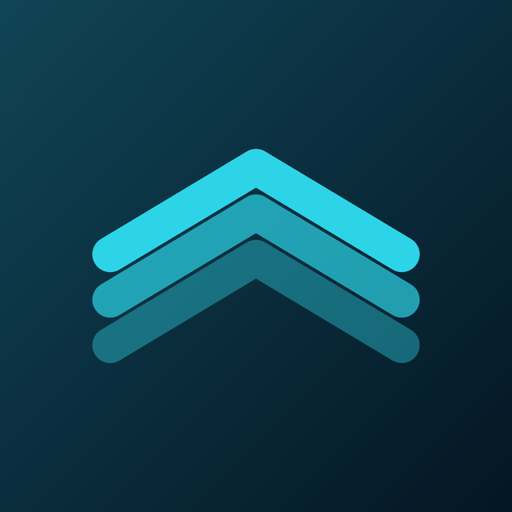
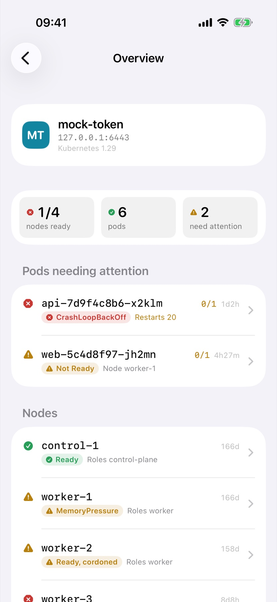
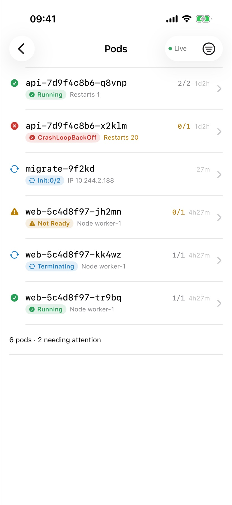
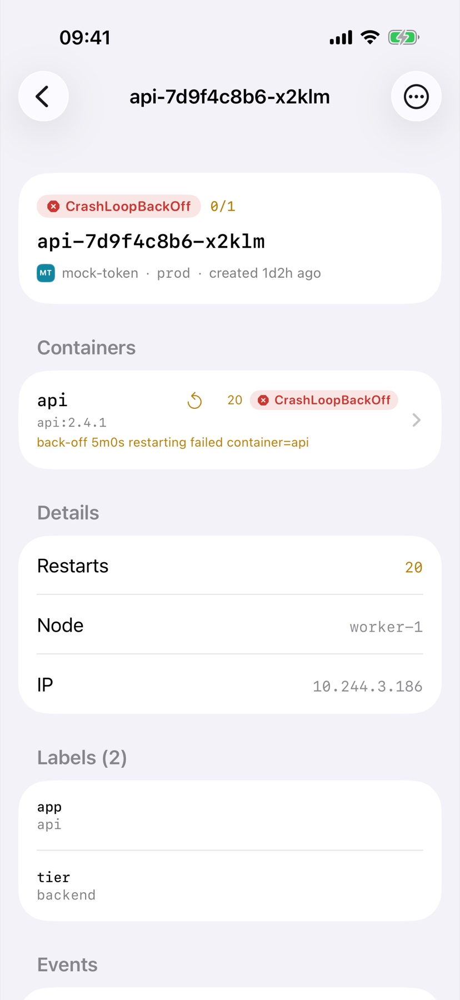
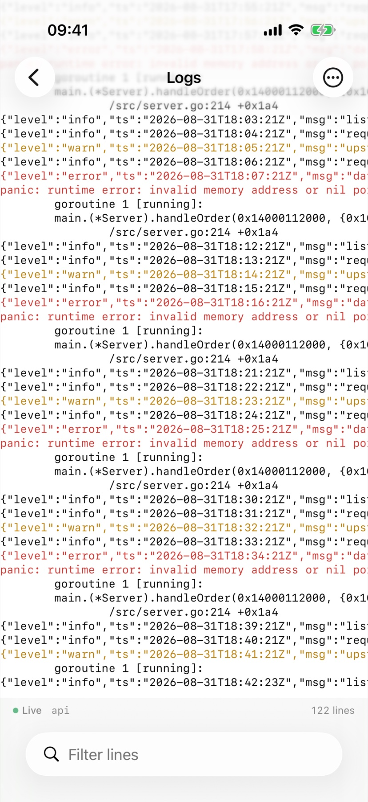

Your Kubernetes clusters, on your phone.




Workloads, network, configuration, storage and RBAC — plus your custom resources, which get the same lists, details and health as anything built in.
Foredeck watches the API server and applies changes as they happen, the way a dashboard on your desk does.
CrashLoopBackOff, ImagePullBackOff, Init:0/2, Not Ready — the container-level reason, not just “Running”.
Stream any container, switch between them, read the previous instance after a crash, and filter as it scrolls.
Tokens and client certificates live in the iOS Keychain. Foredeck talks only to the clusters you add.
Scale, restart, delete and cordon appear only after the cluster confirms your credential may do them. Any cluster can be marked read-only.
aws eks update-kubeconfig or by
gcloud does not carry a token — it carries a command to run for
one, and iOS has no way to run a command-line tool. Client certificates and
bearer tokens work everywhere. Foredeck says so at import and shows you the
two kubectl commands that produce a ServiceAccount token.
Kubernetes is a registered trademark of The Linux Foundation. Foredeck is an
independent client and is not affiliated with, endorsed by or sponsored by
The Linux Foundation or the Kubernetes project.
© 2026 Andrew Kozlowskiy